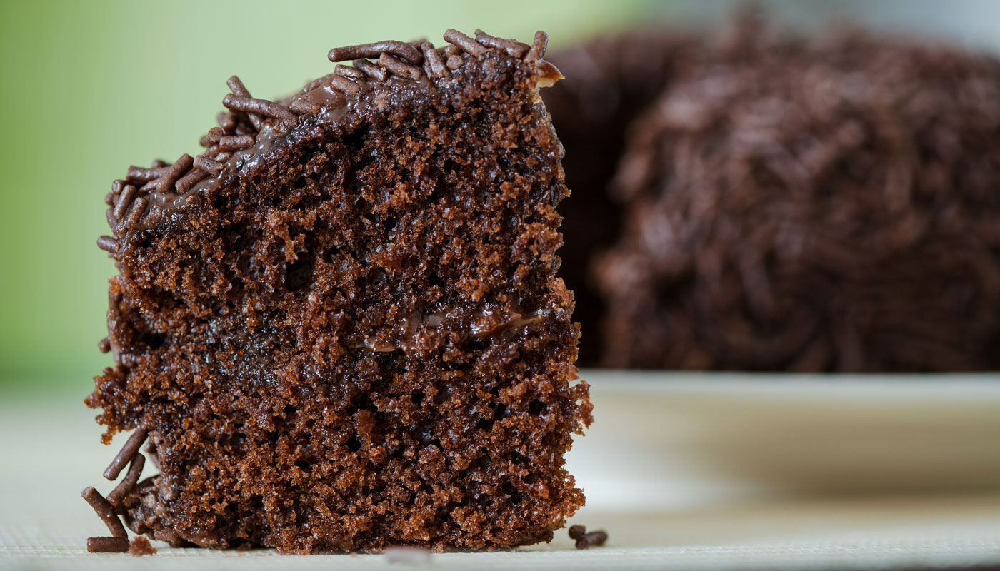

BOLO DE CHOCOLATE

Cake Chocolate clássico
INGREDIENTES
- 2 xícaras (chá) de farinha de trigo
- 2 xícaras (chá) de açúcar
- 1 xícara (chá) de chocolate em pó
- 3 ovos
- 2 colheres (sopa) de manteiga
- 2 xícaras (chá) de leite
- 1 colher (sopa) de fermento em pó
MODO DE PREPARO
- Adicione em um recipiente o a farinha de trigo, o açúcar e o chocolate em pó e misture.
- Agora, adicione os ovos, o leite e a manteiga.
- Após misturar adicione o fermento em pó.
- Dispeje tuddo em uma forma untada e coloque em um forno pré-aquecido a 190º por 40 min.